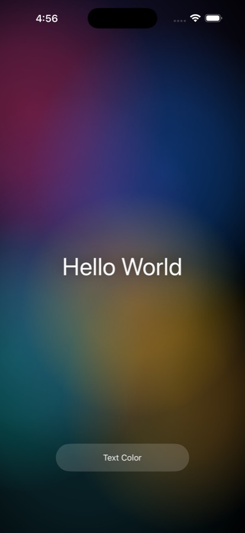

Hello ASM
An iOS app written entirely in hand-written ARM64 assembly. A drifting gradient cloud, and a menu to recolour the text.

Install- Executable
- 71,168 bytes
- IPA
- 18,461 bytes
- Machine code
- 3,480 bytes
- Instructions
- 870
- Minimum iOS
- 14.0